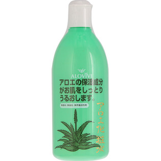

返回列表
产品名称：アロヴィヴィ アロエ化粧水

東京アロエ アロヴィヴィ アロエ化粧水 ５００ＭＬ
メーカー 東京アロエ
JANコード 4904722200228
商品の特徴
○アロエの天然成分がお肌をしっとりうるおします。 ○無添加・無着色・無界面活性剤
成分・分量
水、アルコール、BG、キダチアロエ葉エキス、レモン果実エキス、マグワ根皮エキス、BG、グリチルリチン酸2K、クエン酸Na、フェノキシエタノール
用法及び用量
・お肌に異常があるとき、又はお肌に合わない時はご使用をおやめください。
・極端に高温多湿の場所や、直射日光のあたる場所には保管しないでください。
・乳幼児の手の届かないところに保管してください。